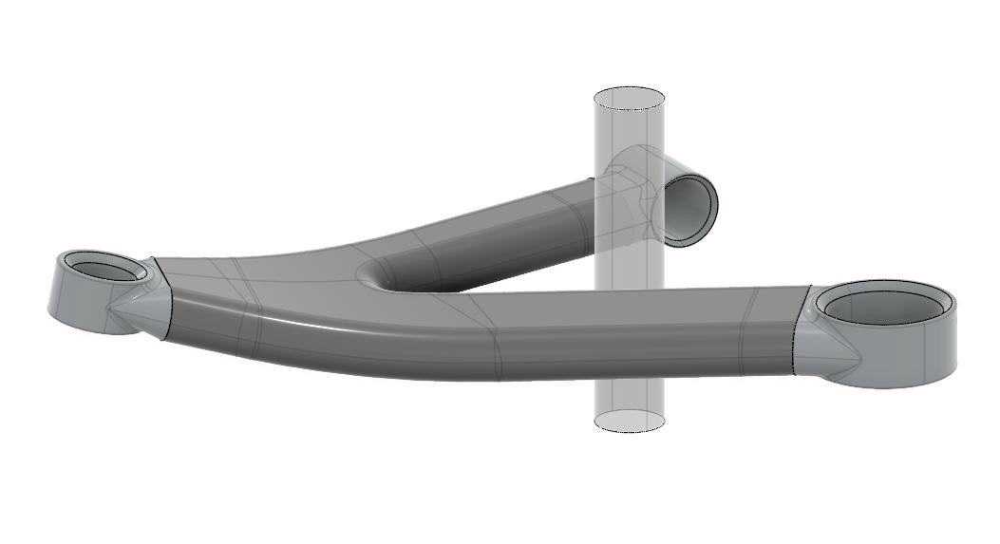
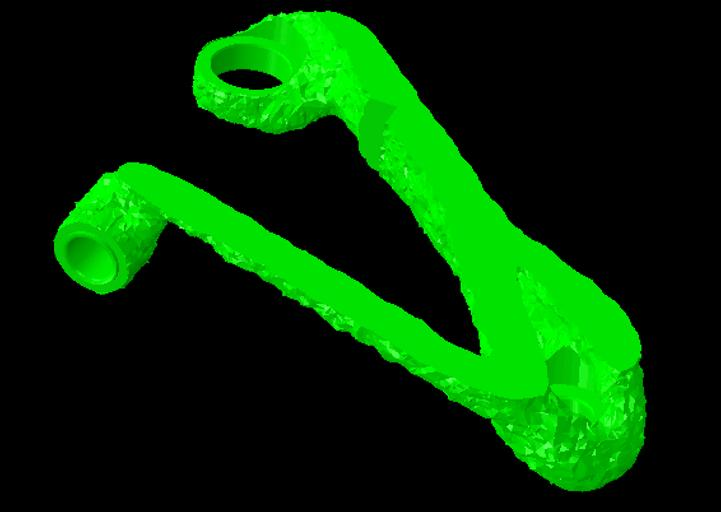
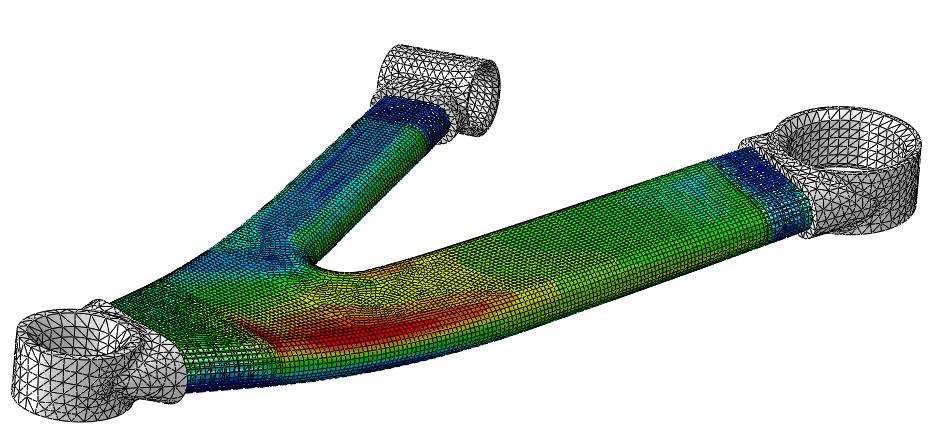
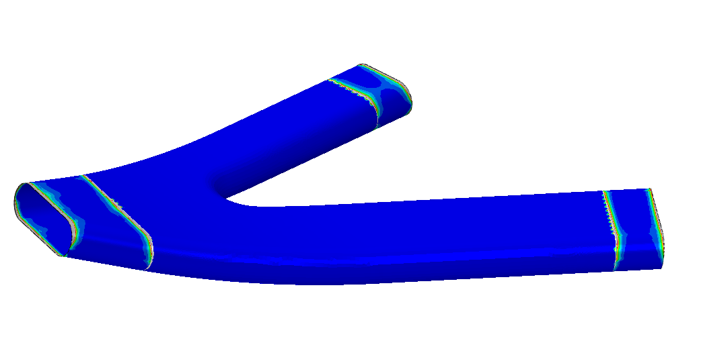
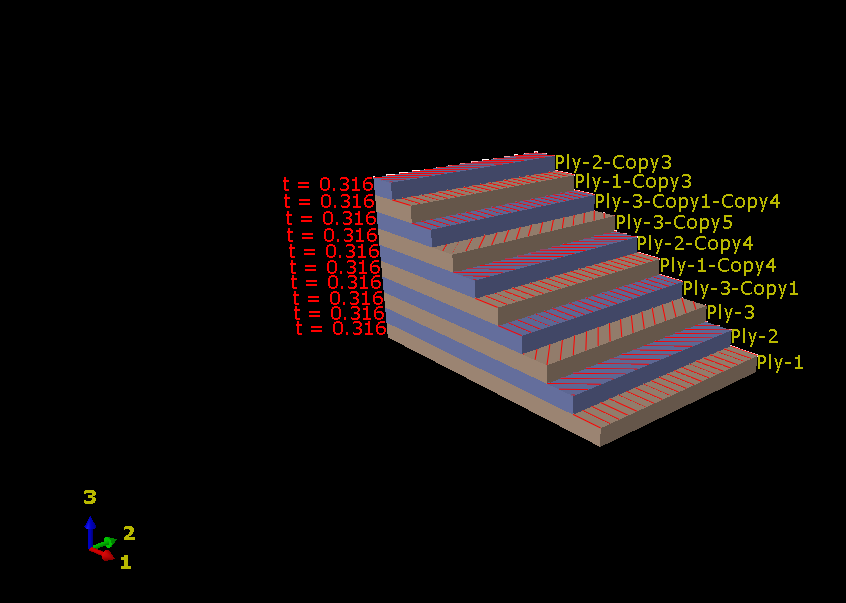
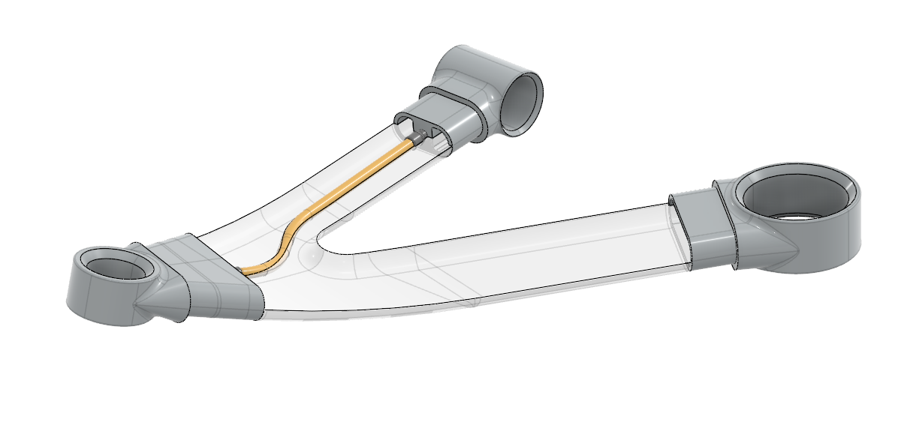
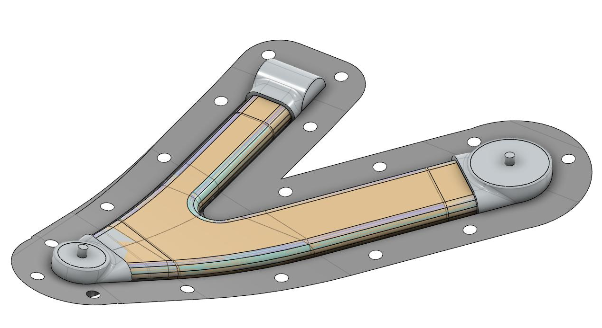

Engineering Challenge
Design a composite MacPherson lower arm for 25 kN longitudinal and 30 kN lateral impact loads while preserving bushing compatibility and preventing complete separation after failure.
Composite Structures · Lightweight Design
A hybrid CFRP suspension component designed around impact resistance and mass
A four-person composite-structures project combining analytical predesign, topology optimization, detailed FEA, plybook optimization and manufacturing assessment for a safety-critical lower control arm.

Design a composite MacPherson lower arm for 25 kN longitudinal and 30 kN lateral impact loads while preserving bushing compatibility and preventing complete separation after failure.
The Challenge
The assignment required a composite MacPherson lower arm capable of carrying quasi-static impact loads while remaining compatible with the prescribed bushing seats and mounting-screw access.
The design had to resist a 25 kN longitudinal impact and a 30 kN lateral impact applied at the ball joint, including a 35 mm out-of-plane offset. A further safety requirement prohibited complete separation after failure, preventing wheel detachment.
The resulting concept drew on Formula 1 wishbone construction: two bonded composite shells, metallic load introduction points and an internal high-strength tether acting as a mechanical fail-safe.
Predesign & Topology
A MATLAB implementation of the displacement method calculated nodal reactions, displacements and optimal hollow rectangular sections. Classical Lamination Theory supplied the equivalent properties of an initial composite layup.
A beam model in Abaqus verified the analytical solution: the predicted displacement was 0.1492 mm versus 0.1491 mm in FEA, with close agreement across the reaction forces.
Abaqus topology optimization then minimized strain with 10% and 5% remaining-volume constraints. The resulting load paths guided several CAD iterations and the final hollow-arm geometry.

Hybrid Architecture
Composite Body
Load Introduction & Safety
Detailed FEA
The CFRP skins were represented with shell elements, tied to a solid Rohacell core and solid aluminium joints. Local mesh refinement around the inserts supported compliance and bonding-surface optimization.
The final contact model replaced ideal ties with a 0.14 mm 3M AF 555 adhesive layer. Damage initiation used a quadratic traction criterion, while mixed-mode evolution followed the Benzeggagh–Kenane law.
Rubber bushings were represented with a Mooney–Rivlin hyperelastic model. The assessment also included Tsai–Hill and Tsai–Wu composite criteria, eigenvalue buckling and geometric nonlinearity.


Plybook Optimization
Ply orientations were treated as design variables in Isight. An exploratory DOE was followed by a multi-island genetic algorithm over 400 iterations, minimizing the maximum Tsai–Hill and Tsai–Wu indices.
The initial symmetric layup [-45/45/0/-45/45/0/-45]s evolved into [90/60/-30/-60/-60/30/30]s.
The maximum Tsai–Hill index decreased from 0.685 to 0.587, improving the laminate margin while retaining the selected structural concept.

Safety & Manufacturing
The internal Zylon tether connects the metallic joints and remains slack during normal operation. If the carbon shell fractures, the tether retains the wheel-side components and prevents complete separation.
Aluminium adhesive zones are sandblasted before assembly. Inserts and Rohacell core are positioned before lamination, and the two skins overlap to create a continuous bonded closure.
Two CFRP mold concepts were developed for high surface finish, dimensional accuracy and matching thermal expansion. Both were sized for the 6 bar pressure required by the autoclave cycle.


Outcome
Composite System
Joints & Tether
The estimated component breakdown totals 1,614 g, reported as an overall project outcome of approximately 1.6 kg.
Methods & Tools